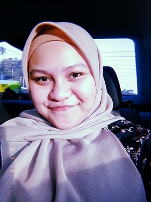

BIODATA
MY BIODATA

ONCE YOU REPLACE NEGATIVE THOUGHTS WITH POSITIVE ONES, YOU WILL START HAVING POSITIVE RESULTS
MY PERSONAL DETAILS:
- NAME : NURHAFIZAH BINTI MUHAMAD
- DATE OF BIRTH : 20 SEPTEMBER 1999
- RACE : MALAY
- RELIGION : ISLAM
- COUNTRY OF BIRTH : KELANTAN
- HOBBIES : READING, VOLUNTEER AND WATCHING MOVIES
- INSPIRE IDOL: DATUK PROF. DR CHE MUHAYA HAJI MOHAMAD
- OCCUPATIONS : STUDENT IN OFFICE SYSTEM AND MANAGEMENT
- SOFT SKILLS AND ABILITY: Have typing skill, able to speak in English and Mandarin and expert in a record management.
- FAVOURITE PLACE : BEACH
Interested to know me more? CLICK HERE